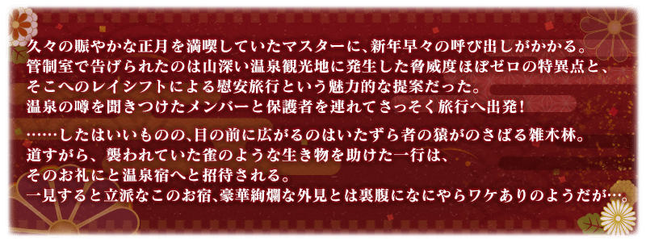

◆活動舉辦期間◆
2018年12月31日(一) 23:00～2019年1月15日(二) 11:59
◆活動概要◆
舉辦期間限定活動「雀之旅社活動日誌～閻魔亭繁盛記～」！
在深山幽谷之中的溫泉旅館掀起的糾紛會是？
與經營旅社的老闆娘・紅閻魔一起讓『閻魔亭』更熱鬧！
本活動中，收集活動收集道具，用來改建秘境的溫泉旅社『閻魔亭』！
越改建『閻魔亭』的話建築物會越氣派，對應該狀況提升「客人滿足度」。
還有，1天可獲得1次與客人滿足度同値的「奉納點數」，達成對應該總獲得量任務的話會開放故事。
更加改建收集更多奉納點數，觀賞故事的結尾吧！
◆有關Servant真名的注意◆
在2018年12月31日(一) 23:00以後新配信的主線故事及期間限定活動，會顯示隱藏真名的對象Servant真名。
※亞種特異點(從Ⅰ到Ⅳ)、復刻活動中不在此限。
◆活動參加條件◆
滿足以下條件的Master才能參加
・通過第2部 第3章「Lostbelt No.3 人智統合真國 SIN 紅之月下美人」
※不需要通過亞種特異點(從Ⅰ到Ⅳ)。
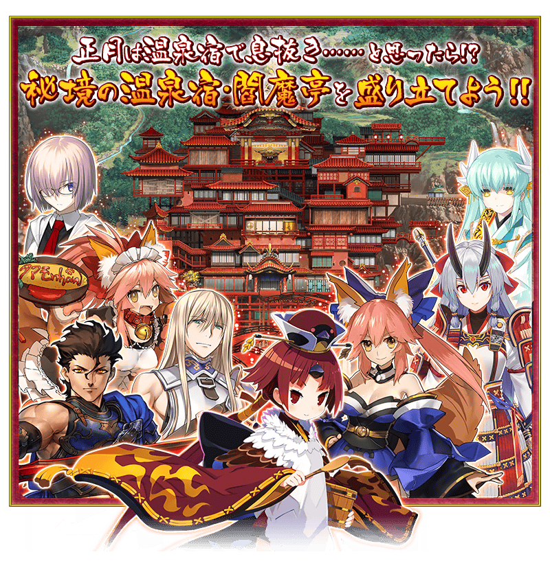 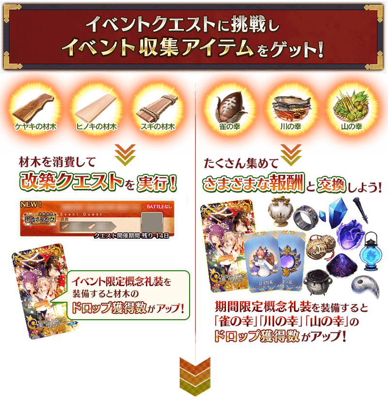 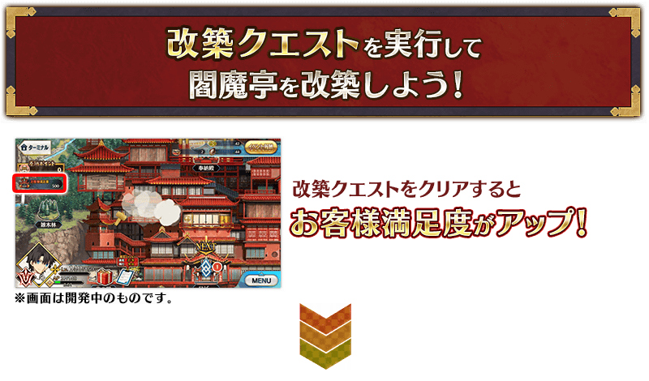 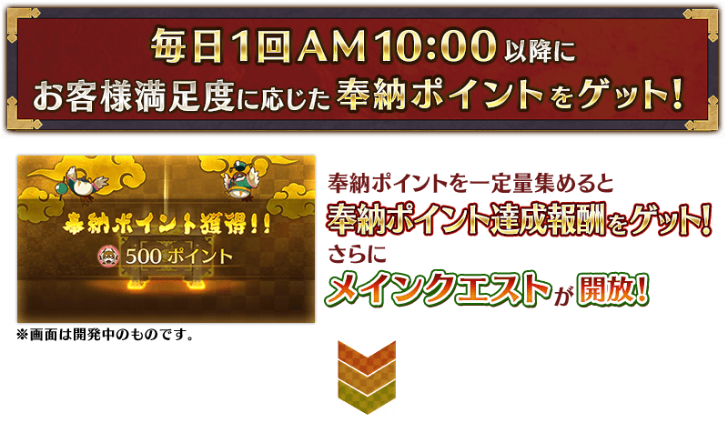
※為了通過故事，不需要通過所有的改建關卡。


通過主線關卡第三節後，每天1次在AM9:00以後移動到活動地圖時，可獲得與客人滿足度同值的奉納點數。
本活動中，有著「奉納點數的總獲得量到達一定量」的任務。達成此任務的話可獲得達成報酬，開放下個任務。另外，會有開放一部份主線關卡的情況。
任務與達成報酬可點擊在管理室(ターミナル)畫面右上的「活動報酬」鍵所顯示的「奉納點數報酬」畫面確認。
可獲得奉納點數在AM9:00～隔天AM8:59之間只限1次，獲得後在隔天AM9:00前無法獲得。
另外，可獲得奉納點數只限該天的份，無法一同獲得在前一天以前該入手的份。
請注意活動舉辦期間內奉納點數在未滿足開放主線關卡必要任務的達成值的情況，根據開始活動的時間點，有可能無法通過所有主線關卡。

【開放主線關卡必要的任務】
| 關卡 | 開放必要的任務 |
|---|---|
| 主線關卡第七節 | 『奉納點數』累計獲得3,500點 |
| 主線關卡第九節 | 『奉納點數』累計獲得90,000點 |
| 主線關卡第十二節 | 『奉納點數』累計獲得500,000點 |
◆有關開放任務及主線關卡的注意◆
※請注意新任務的開放必須領取達成任務的達成報酬。
※主線關卡的開放，除了奉納點數的總獲得量到達一定量以外，會有必須要改建特定設施和達成特定任務及領取任務達成報酬的情況。

本活動中，會發生消耗活動收集道具「櫸木木材」「檜木木材」「杉木木材」來執行的改建關卡。
執行此關卡後會改建閻魔亭的設施，可提升客人滿足度。客人滿足度會影響奉納點數的獲得量，改建越多可獲得更多的奉納點數。
另外，透過進行改建的地點，也會有開放主線關卡。
為了推進故事，也積極地挑戰改建關卡吧！
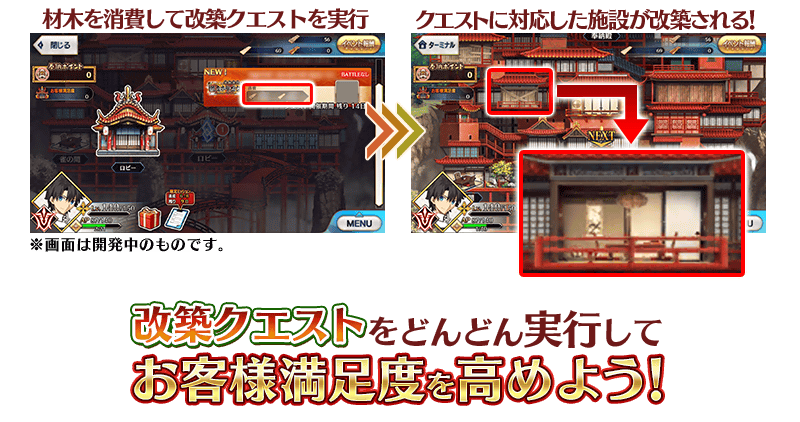
【1月8日(二) 17:00追記】
以通過期間限定活動「雀之旅社活動日誌～閻魔亭繁盛記～」主線關卡的Master做為對象開放高難易度的挑戰關卡。
挑戰關卡就算通過後也不會消失，可以變更Servant和概念禮裝的組合後無數次挑戰。
※關卡通過報酬、戰利品、Master經驗值、魔術禮裝經驗值、絆點數只可在初次通過時獲得。
◆挑戰關卡開放時間◆
2019年1月8日(二) 17:00～
◆挑戰關卡參加條件◆
滿足以下條件的Master才能參加
・通過期間限定活動「雀之旅社活動日誌～閻魔亭繁盛記～」主線關卡
◆挑戰關卡初次通過報酬◆
傳承結晶 1個

超值攻略方法・其1
本活動中，所有的Servant會得到「櫸木木材」「檜木木材」「杉木木材」的掉落獲得數提升的加成。
提升哪個活動收集道具的掉落獲得數因Servant而異，將得到適合目標活動加成獎勵的Servant編入隊伍吧！
※請注意各關卡的道具掉落率並非100％。
▶特別活躍的Servant
特別活躍的一部份Servant除了「櫸木木材」「檜木木材」「杉木木材」所有的掉落獲得數提升外再加上得到活動關卡中的絆點數獲得量提升的加成。
※「絆點數獲得量提升」的對象因Servant而異。 ※瑪琇・基利艾拉特的「我方全體的絆點數獲得量提升」的效果在支援時無效。
【活動加成的效果量與對象Servant】
| 掉落 獲得數 |
絆點數 獲得量 |
職階 | 稀有度 | Servant名 |
|---|---|---|---|---|
| 櫸木木材 檜木木材 杉木木材 所有+2 |
只限自身 ＋50％ |
Saber | ★★★★★ | 紅閻魔 |
|
櫸木木材 檜木木材 杉木木材 所有＋1 |
只限自身 ＋20％ |
Saber | ★★★★ | 迪爾姆德・奧德利暗 |
| Archer | ★★★★ | Archer・地獄 (巴御前) |
||
| Lancer | ★★★★ | 芬恩・麥克庫爾 | ||
| Caster | ★★★★★ | 玉藻前 | ||
| Assassin | ★★★★★ | 李書文 | ||
| Berserker | ★★★★ | 玉藻貓 | ||
| ★★★ | 清姬 | |||
| 我方全體 ＋5％ |
Shielder | ★★★ | 瑪琇・基利艾拉特 |
※1/8(二) 17:00修正
▶其他的Servant
上述一部份Servant以外，對應職階「櫸木木材」「檜木木材」「杉木木材」任一的掉落獲得數提升。
【活動加成的效果量與對象Servant】
| 掉落獲得數 | 職階 |
|---|---|
| 櫸木木材＋1 | Saber Lancer Ruler |
| 檜木木材＋1 | Archer Caster Avenger MoonCancer Foreigner |
| 杉木木材＋1 | Rider Assassin Berserker Alterego |
超值攻略方法・其2
裝備活動限定概念禮裝提升活動收集道具的掉落獲得數！
裝備可在活動道具交換入手的活動限定概念禮裝「銀雪の女神たち」的話，會提升活動收集道具「櫸木木材」「檜木木材」「杉木木材」各自的掉落獲得數。
※請注意各關卡的道具掉落率並非100％。
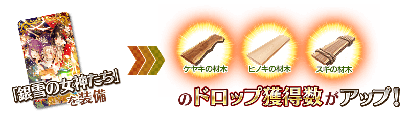
超值攻略方法・其3
裝備期間限定概念禮裝提升活動收集道具的掉落獲得數！
裝備在聖晶石召喚Pick Up的期間限定概念禮裝「笑顔のしるし」「正月の神秘」「慎ましき豚」的話，會提升活動收集道具「麻雀美食」「河川美食」「山林美食」各自的掉落獲得數。
※請注意各關卡的道具掉落率並非100％。
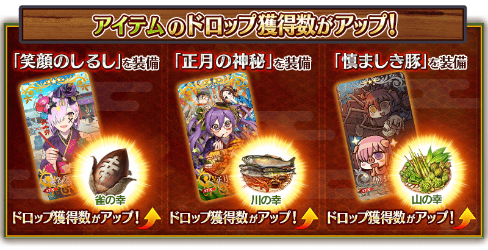
活動收集道具可自點擊管理室(ターミナル)畫面右上「活動報酬」鍵所顯示的「活動道具交換」畫面，交換以下的道具。
※英靈結晶・流星之芙芙ALL★4(HP)、英靈結晶・日輪之芙芙ALL★4(ATK)的交換在通過期間限定活動「雀之旅社活動日誌～閻魔亭繁盛記～」主線關卡後開放。 ※10,000QP(能以木材交換)的交換，在活動舉辦期間結束後開放。
◆交換期間◆
2018年12月31日(一) 23:00～2019年1月23日(三) 11:59
※交換期間結束後「麻雀美食」「河川美食」「山林美食」「櫸木木材」「檜木木材」「杉木木材」會消失。
◆能用麻雀美食交換的道具◆
|
【活動限定概念禮裝】 【活動報酬指令紋章】 【技能強化＆靈基再臨素材】 【靈基再臨素材】 【其他道具】 |
◆能用河川美食交換的道具◆
|
【活動限定概念禮裝】 【活動報酬指令紋章】 【技能強化＆靈基再臨素材】 【靈基再臨素材】 【其他道具】 |
◆能用山林美食交換的道具◆
|
【活動限定概念禮裝】 【技能強化＆靈基再臨素材】 【其他道具】 |
◆能用櫸木木材交換的道具◆
 |
【其他道具】 |
◆能用檜木木材交換的道具◆
 |
【其他道具】 |
◆能用杉木木材交換的道具◆
|
【其他道具】 |

| 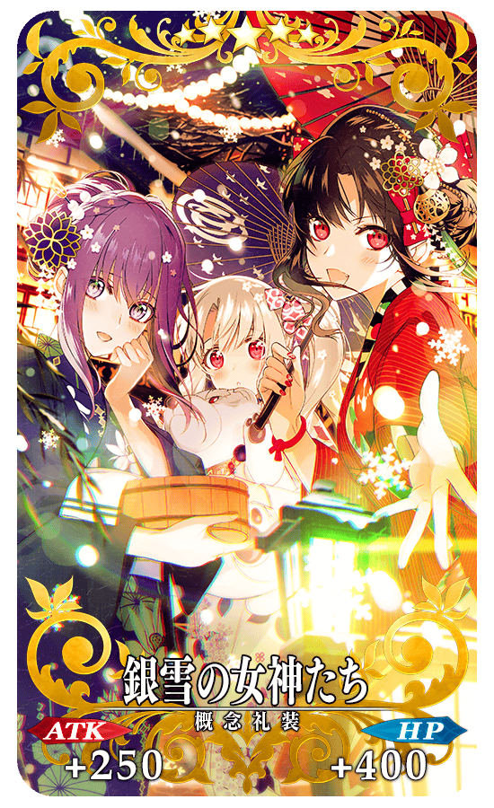 |
★★★★★SSR
|


|
【活動限定】 |
| 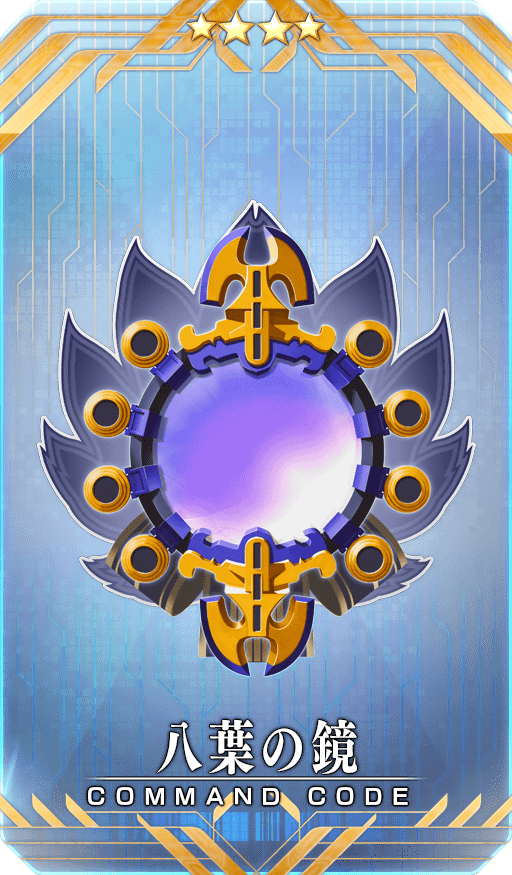 |
★★★★SR |
強化玉藻前(Caster)、芬恩・麥克庫爾、玉藻貓、清姬(Berserker)4位的特別關卡「Servant強化關卡」，做為新常駐關卡追加。
做為關卡通過報酬，不僅進行對象Servant的強化，也可獲得聖晶石。
※請注意在Servant強化關卡沒有文字冒險部份。
◆追加時間◆
2018年12月31日(一) 23:00～
◆參加條件◆
持有強化對象Servant，必須使其最終再臨。
※未持有對象Servant的情況，不會出現關卡。
※關卡沒有舉辦期限。
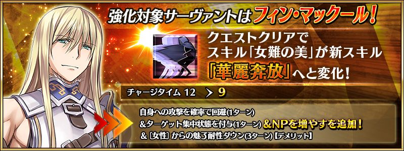
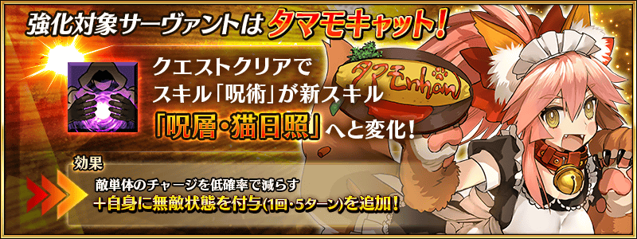

◆「雀之旅社活動日誌Pick Up召喚(每日交替)」期間◆
期間:2018年12月31日(一) 23:00～2019年1月15日(二) 11:59
舉辦期間限定「雀之旅社活動日誌Pick Up召喚(每日交替)」！
※未通過第2部 第3章「Lostbelt No.3 人智統合真國 SIN 紅之月下美人」的狀態也能進行「雀之旅社活動日誌Pick Up召喚(每日交替)」。
在期間限定活動「雀之旅社活動日誌～閻魔亭繁盛記～」活躍的「★5(SSR)紅閻魔」以期間限定新登場！
本次包含上述Pick Up 4位的Servant！
「★5(SSR)紅閻魔」「★5(SSR)玉藻前(Caster)」「★4(SR)芬恩・麥克庫爾」「★4(SR)玉藻貓」以每日交替Pick Up。
詳情請在聖晶石召喚畫面左下的召喚詳細確認。
做為期間限定概念禮裝的「★5(SSR)笑顔のしるし」「★4(SR)正月の神秘」「★3(R)慎ましき豚」登場！
裝備上述3種概念禮裝的話，在期間限定活動「雀之旅社活動日誌～閻魔亭繁盛記～」中會提升活動收集道具的掉落獲得數。
◆有關Servant的注意◆
※紅閻魔在Pick Up期間結束後不會追加到故事召喚。
※請注意「雀之旅社活動日誌Pick Up召喚(每日交替)」做為每日交替，紅閻魔就算Pick Up期間中也會有不被抽出的日子。
※玉藻前(Caster)、芬恩・麥克庫爾、玉藻貓在Pick Up期間結束後仍會在故事召喚被抽出。
◆有關概念禮裝的注意◆ ※請注意做為抽出對象的期間限定概念禮裝只有「★5(SSR)笑顔のしるし」「★4(SR)正月の神秘」「★3(R)慎ましき豚」，其他期間限定概念禮裝為抽出對象外。 ※慎ましき豚在Pick Up期間中，也能在友情點數召喚獲得。 ※請注意自友情點數召喚抽出的慎ましき豚在自動變還設定登錄★3(R)概念禮裝的情況，會變成自動變還的對象。
Pick Up期間中，期間限定Servant、Pick Up Servant、期間限定概念禮裝的出現機率提升！
10次召喚中確定1張★4(SR)以上和確定1位★3(R)以上的Servant！
※確定★4(SR)以上包含Servant和概念禮裝。
| 每日交替Pick Up期間 | 每日交替Pick Up內容 |
|---|---|
| 12月31日(一) 23:00～1月1日(二) 22:59 | 紅閻魔 芬恩・麥克庫爾 玉藻貓 |
| 1月1日(二) 23:00～1月2日(三) 22:59 | 紅閻魔 玉藻貓 |
| 1月2日(三) 23:00～1月3日(四) 22:59 | 紅閻魔 芬恩・麥克庫爾 |
| 1月3日(四) 23:00～1月4日(五) 22:59 | 紅閻魔 玉藻前(Caster) 芬恩・麥克庫爾 玉藻貓 |
| 1月4日(五) 23:00～1月5日(六) 22:59 | 玉藻前(Caster) 芬恩・麥克庫爾 玉藻貓 |
| 1月5日(六) 23:00～ 1月8日(二) 22:59 |
紅閻魔 玉藻貓 |
| 1月8日(二) 23:00～ 1月10日(四) 22:59 |
紅閻魔 芬恩・麥克庫爾 |
| 1月10日(四) 23:00～1月11日(五) 22:59 | 紅閻魔 玉藻前(Caster) 芬恩・麥克庫爾 玉藻貓 |
| 1月11日(五) 23:00～1月12日(六) 22:59 | 玉藻前(Caster) 芬恩・麥克庫爾 玉藻貓 |
| 1月12日(六) 23:00～1月13日(日) 22:59 | 紅閻魔 玉藻貓 |
| 1月13日(日) 23:00～1月14日(一) 22:59 | 紅閻魔 芬恩・麥克庫爾 |
| 1月14日(一) 23:00～1月15日(二) 11:59 | 紅閻魔 芬恩・麥克庫爾 玉藻貓 |
※請注意會以每日交替變更Pick Up的Servant。
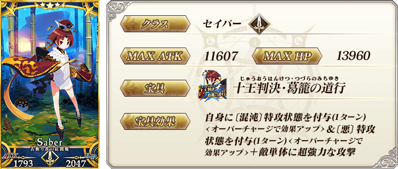

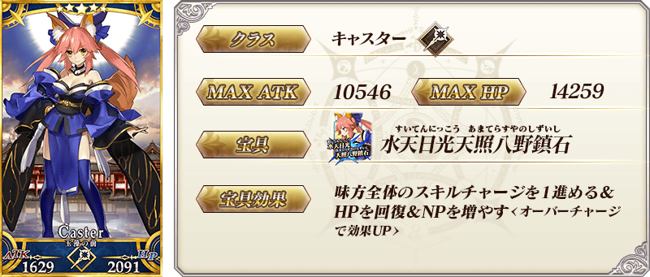
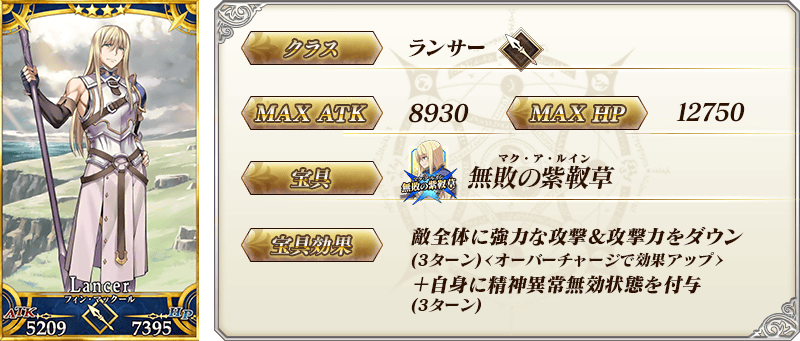
※上述「★4(SR)芬恩・麥克庫爾」的卡面為靈基再臨第2階段。

※上述「★4(SR)玉藻貓」的卡面為靈基再臨第2階段。

|
★★★★★SSR
|


|
★★★★SR
|


|
★★★R
|


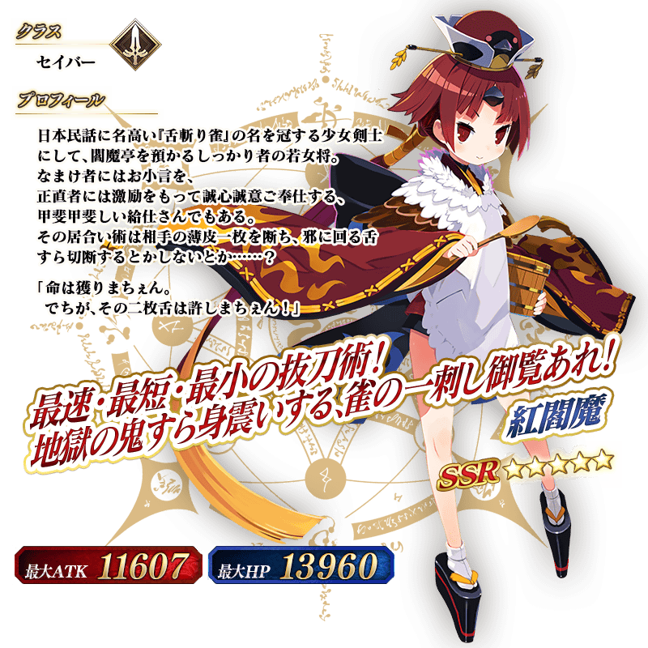
介紹紅閻魔的寶具演出す！
在「Fate/Grand Order」官方網站內的公告中，公開了「★5(SSR)紅閻魔」的寶具演出。敬請確認。
翻新在期間限定活動「雀之旅社活動日誌～閻魔亭繁盛記～」活躍的「★4(SR)玉藻貓」「★3(R)清姬(Berserker)」戰鬥動作及寶具演出！
在「★4(SR)玉藻貓」也追加透過寶具效果使自身成暈眩狀態時的専用演出。
另外，在「Fate/Grand Order」官方網站內的公告中，公開了「★4(SR)玉藻貓」及「★3(R)清姬(Berserker)」的寶具演出。敬請確認。
◆翻新時間◆
2018年12月31日(一) 23:00～
【玉藻貓】
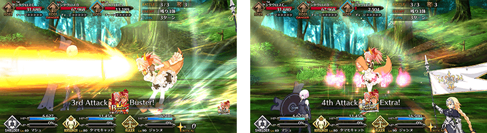
【清姬(Berserker)】
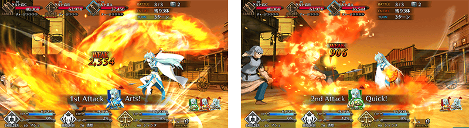
介紹玉藻前(Caster)、芬恩・麥克庫爾的寶具演出！
在「Fate/Grand Order」官方網站內的公告中，公開了「★5(SSR)玉藻前(Caster)」「★4(SR)芬恩・麥克庫爾」的寶具演出。敬請確認。